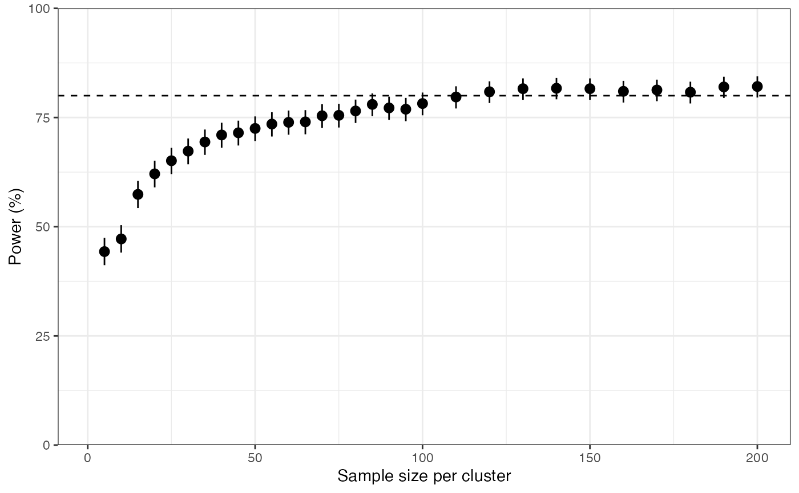

vignettes/tutorial_design.Rmd
tutorial_design.RmdThis tutorial demonstrates how you can use the DRpower package in the design phase of a pfhrp2/3 deletion study to ensure you have adequate power. This takes a purely statistical view of the problem; the results presented here should be taken alongside other considerations such as logistical, financial and ethical factors.
This tutorial covers:
Our aim is to conduct a multi-site survey to test the prevalence of pfhrp2/3 deletions against a defined threshold. The question is; how many sites should I use and how many samples per site?
The fastest way to get an idea of adequate sample size is to consult
pre-computed sample size tables. These are distributed as part of the
DRpower package and can be accessed through the
df_ss object. This data.frame contains sample sizes for a
wide range of parameter combinations, so we will start by filtering down
to the parameters we care about. In our case, we will power the study to
detect a prevalence of 10% deletions in our domain, and we will assume
an intra-cluster correlation coefficient of 0.05 based on historical data:
# get sample size table for parameters of interest
get_sample_size_table(prevalence = 0.1, ICC = 0.05, prev_thresh = 0.05)
#> # A tibble: 19 × 2
#> n_clust `0.1`
#> <int> <dbl>
#> 1 2 NA
#> 2 3 NA
#> 3 4 NA
#> 4 5 496
#> 5 6 113
#> 6 7 68
#> 7 8 51
#> 8 9 37
#> 9 10 30
#> 10 11 25
#> 11 12 22
#> 12 13 17
#> 13 14 15
#> 14 15 14
#> 15 16 13
#> 16 17 11
#> 17 18 11
#> 18 19 10
#> 19 20 9Note that these values are only valid if you intend to analyse your data using the DRpower model. If you plan to do a different statistical analysis then you need a different power analysis.
We can see that at least 5 sites are needed, otherwise sample sizes
are too large to be reported in this table. It’s also interesting to
note that the total sample size (n_clust * N_opt)
decreases as we recruit more sites For example, a 6-site design
would require 678 samples in total, but a 10-site design would require
only 300. This is one of many arguments for recruiting as many
sites as possible.
Let’s assume that we can only recruit 6 sites for logistical reasons, meaning we are aiming for 113 samples per site. These sites can be chosen through randomisation of all health facilities, or by using predesignated sentinel surveillance sites. In the latter case, it is important that sentinel sites are chosen to be representative of the population in the domain as a whole (e.g. in terms of demographic and social characteristics), otherwise we risk getting a biased view of the prevalence of pfhrp2/3 deletions.
Although sample size tables are a good starting point, they do not tell us how power is changing with \(N\). It could be that the curve is very steep, in which case dropping even just a few samples would really hurt our power. On the other hand, it could be that the curve is very shallow, in which case we have some more wiggle room.
All of the power curves that were used to produce the sample size
tables are distributed with the DRpower package and accessible
via the df_sim object. We can also visualise them directly
using the plot_power() function:
# plot power as a function of per-site sample size
plot_power(n_clust = 6, prevalence = 0.1, N_max = 200)
We find that the power curve is fairly shallow around the chosen value of N = 113. For example, the value N = 70 still achieves 75% power. We need to be pragmatic about these numbers, and not stick dogmatically to the target value of 80% power without thinking about what it means. We should remember that power is defined as the probability of finding an interesting result if it is there, so a study with 75% power has almost as good a chance of success as a study with 80% power. It is certainly not the case that if we fail to hit 80% then the study is completely invalid. This is important because a drop in sample size from 113 per site to 70 per site may be the difference between a study that is feasible to conduct and one that is not. We need to balance these factors against each other when coming up with a study design.
That being said, we should not allow power to drop too low or the study may not be worth doing. In our case we will stick to the target value of 113 samples per site, as we believe we can raise funds to this level and successfully carry out the study with this sample size.
Next, we should examine our 6 sites individually to see if they are able to recruit 113 samples. Ideally, this should be informed by historical incidence trends at each of the sites, which can give a good indication of how many malaria cases tend to be seen throughout the transmission season.
In our case, let’s assume that two sites are in low transmission areas, meaning they can only recruit 60 samples during the study time frame. Another two sites are very small, and only have the capacity to enrol 40 samples due to staffing issues.
The question is - how badly do these smaller sample sizes hurt our
power? We cannot work this out from sample size tables or power curves
because these assume the same sample size in each site. But we can
explore power directly using the get_power_threshold()
function:
get_power_threshold(N = c(113, 113, 60, 60, 40, 40), # new sample sizes per site
prevalence = 0.1,
ICC = 0.05,
prev_thresh = 0.05,
reps = 1e3)
#> prev_thresh power lower upper
#> 1 0.05 73.7 70.85 76.41We find that power is slightly lower than before, probably around 74%. We could try to balance things out by obtaining more samples from our remaining two sites:
get_power_threshold(N = c(250, 250, 60, 60, 40, 40), # rebalanced cluster sizes
prevalence = 0.1,
ICC = 0.05,
prev_thresh = 0.05,
reps = 1e3)
#> prev_thresh power lower upper
#> 1 0.05 77.7 74.99 80.25This rebalancing has helped, power is now back up to around 78%, but it comes at the cost of obtaining more samples. The total sample size has now gone up to 700 from the original 678.
As an aside, compare this with what happens if we were able to recruit just one more site, rather than expanding our existing sites:
get_power_threshold(N = c(113, 113, 60, 60, 40, 40, 40), # one more site of size 40
prevalence = 0.1,
ICC = 0.05,
prev_thresh = 0.05,
reps = 1e3)
#> prev_thresh power lower upper
#> 1 0.05 78.2 75.51 80.72Power is now recovered to around 78% while the total sample size is only 466. This emphasises the point that where possible we should put our efforts into recruiting more sites rather than increasing per-site sample sizes.
In our case, we assume a hard limit of 6 sites, so we will stick with the rebalanced numbers:
# final sample sizes per site
N <- c(250, 250, 60, 60, 40, 40)This should give us power of around 78% (somewhere in the range 75% to 80%), which is a balance between the target power we would like and what we can realistically achieve given real world constraints.
It is always sensible to account for dropout, meaning samples that, for whatever reason, do not make it all the way to the final analysis. Reasons can include people withdrawing consent from the study, RDTs getting lost, samples getting contaminated or failing the molecular laboratory methods. Although these events might be unlikely, failing to account for potential dropout makes our study quite fragile to unforeseen events that can hurt our power. A local technician is often the best person to give informed advice on the expected dropout. In our case we will assume dropout of 10%, meaning we need to divide through by 0.9:
The ceiling() function rounds values up to the nearest
whole number.
Note that these numbers refer to confirmed malaria cases (by some gold standard that is not HRP2-based RDTs). When designing a study we may need to know how many suspected malaria cases to enrol, which may be much higher as suspected malaria cases often come back negative due to the symptoms overlapping with other illnesses. To calculate the number of suspected cases that we need to enrol we should divide our sample sizes through by the expected positive fraction. For example, if we expect 40% of suspected cases to come back positive then we would do the following:
Here, we have assumed the same positive fraction over all sites, but if you have data from individual sites that can be used then that is even better. We might also expect the positive fraction to have a relationship with transmission intensity, in which case we can incorporate this information.
To be completely clear about what each of these numbers mean:
N_suspected gives the number of
suspected malaria cases that we expect to enrol (1952
in total)N_adjusted gives the number of
confirmed malaria cases that we expect to enrol (780 in
total)N gives the number of confirmed
malaria cases that we expect to end up with at the end of the study
after dropout (700 in total)At this stage, it is worth doing a sanity check with the staff at the local facilities to ensure they will be able to enrol these numbers within the study period. This is also the point at which we can do full budget calculations.
Although we have completed a full statistical analysis of the number of sites and samples, we should not think of these values as set in stone. Rather, they give a first sketch of a study design that may be workable, and that has good statistical properties. But if this turns out to be impractical, either from logistical or budgetary perspectives, then we are free to explore variations until we find something that will work. What we should not do is 1) continue doggedly with a plan that we believe will fail in practice, or 2) throw all statistical arguments out the window and just collect whatever samples we can get our hands on. It is usually possible to balance statistical arguments against real world constraints to get something that satisfies both.
We often plan on using the same samples for multiple reasons. For example, it is common to look for drug resistance markers at the same time as pfhrp2/3 deletions. In this case, we should perform a separate power analysis and sample size calculation for these other end-points and always take the largest sample size between the two analyses, as this is the one that will give sufficient power over all end-points.
The DRpower package contains simple functions for exploring
other questions. For example, imagine we are looking to detect the
presence of rare variants, such as pfk13 mutations conferring
partial resistance to artemisinin. Here, we are asking whether the
prevalence is greater than zero in the domain, and a single positive
result confirms that there are. The function
get_power_presence() tells us our power to detect
any mutants. Similar to the pfhrp2/3 deletion
analysis, this assumes we will run a multi-site study and summarise
results over all sites, meaning we need to account for intra-cluster
correlation:
# get power to detect a 1% variant at the domain level
get_power_presence(N = N, prevalence = 0.01, ICC = 0.05)
#> [1] 86.5711We can see that the same sample sizes from the pfhrp2/3
deletion study design also give us more than 80% power to detect rare
variants at the domain level. Another way to approach this problem is to
use the function get_sample_size_presence(), which tells us
how many samples we need in each site to achieve 80% power:
# how many samples would we need to achieve 80% power in the presence analysis
get_sample_size_presence(n_clust = 6, prevalence = 0.01, ICC = 0.05)
#> [1] 58So six sites with 58 samples each would do it. From our
pfhrp2/3 analysis we have variable sample sizes, some above
this level and some below, which is why the
get_power_presence() method was useful.
What if we are not interested in summarising at the domain level, and instead we want to know our power in each of the individual sites? We can use the same functions as before, now run independently over each of the sites. We should fix the ICC at zero because this is no longer a multi-site study:
# how many samples are needed in an independent analysis
get_sample_size_presence(n_clust = 1, prevalence = 0.01, ICC = 0)
#> [1] 161
# get power to detect a 1% variant in each of the individual sites
mapply(get_power_presence, N, MoreArgs = list(ICC = 0))
#> [1] 91.89415 91.89415 45.28434 45.28434 33.10282 33.10282We find that 161 samples are needed for a single site to be powered to detect a rare variant at 1% prevalence. Accordingly, only our large sites (250 samples) achieve power over 80%, and the smaller sites with 60 and 40 samples have power below 50%. Therefore we would conclude that 4 out of our 6 sites are underpowered at the individual level, and so we may be better off pooling results to the domain level.
What if we also plan on using the same samples to look for a drug resistance marker that we already believe to be at high prevalence? In this case, it can be useful to consider what will be the expected margin of error in our analysis. This is not the same as a power analysis, as we are not conducting a hypothesis test. Rather, we are trying to choose a sample size that gives us a certain level of precision.
The get_sample_size_margin() function tells us the
per-site sample size needed to achieve a given margin of error (MOE) if
we plan on pooling results over multiple sites. Here, we assume that the
prevalence of the marker is 20% in the population, and we aim to
estimate this to within plus or minus 10%:
# get sample size needed to achieve 10% MOE if prevalence is 20% and we have 6 sites
get_sample_size_margin(MOE = 0.1, n_clust = 6, prevalence = 0.2, ICC = 0.05)
#> [1] 20We only need 20 samples to achieve this level of precision, which we
are well above. We can also use the get_margin() function
to tell us what our MOE would be given a known sample size:
# get MOE assuming 40 samples in each of 6 sites
get_margin(N = 40, n_clust = 6, prevalence = 0.2, ICC = 0.05)
#> lower upper
#> 11.30813 28.69187With 40 samples we would expect our 95% CI to range from around 11.3% to 28.7%, in other words a MOE of around 8.7%.
The formula used above is extremely simple. It does not allow for
different sample sizes per site, and it also assumes that we know the
ICC exactly rather than estimating it from data. An alternative approach
is to use the DRpower Bayesian model to estimate the
prevalence. In other words, we plan on using the
get_prevalence() function to obtain a 95% Bayesian credible
interval (CrI). If we plan to estimate prevalence this way, then we
should use the function get_margin_Bayesian() to estimate
our MOE. This function works by simulation, and allows for different
sample sizes in each site:
# get MOE when using DRpower Bayesian model
get_margin_Bayesian(N, prevalence = 0.2, ICC = 0.05)
#> estimate CI_2.5 CI_97.5
#> lower 12.6323 12.03405 13.23055
#> upper 31.0595 30.12544 31.99356Using this method, we expect our 95% CrI to range from around 12.6%
to 31%. Note that this MOE is different in the lower and upper
directions meaning the CrI is not symmetric. It is also narrower at the
lower end than our previous get_margin() estimate, but
wider at the upper end. The Bayesian model makes different assumptions,
and so in general we shouldn’t expect the CrI to be the same as the
CI.
In summary…
N) that we are happy with for our
pfhrp2/3 analysis. These don’t quite achieve 80% power, but
they are not far off. They have been chosen taking into account
logistical and feasibility constraints as well as statistical
considerations. We also know the number of suspected malaria cases that
we need to enrol (N_suspected).Notice that this summary considers all end-points for the same sample sizes. We have now arrived at a detailed plan and have a good idea of what we can expect from our results. It is up to us to decide if we want to go ahead with this plan, or if we want to revisit assumptions and modify the plan accordingly.